3. Les bases de la programmation VBSCRIPT
Après avoir décrit les contextes d'exécution possibles pour un script vbscript, nous abordons maintenant le langage lui-même. Dans toute la suite, nous nous plaçons dans les conditions suivantes :
- le conteneur du script est WSH
- le script est placé dans un fichier de suffixe .vbs
Pour présenter un concept, nous opérons en général de la façon suivante :
1 2 3 | |
Les conteneurs vbscript ne sont pas sensibles à la "casse" utilisée (majuscules/minuscules) dans le texte du script. Aussi pourra-t-on écrire indifféremment wscript.echo "coucou" ou WSCRIPT.ECHO "coucou".
Les programmes présentés dans la suite font beaucoup d'écritures à l'écran aussi allons-nous présenter de nouveau les méthodes d'écriture de l'objet wscript.
3.1. Afficher des informations
Nous avons déjà utilisé la méthode echo de l'objet wscript mais ce dernier a d'autres méthodes permettant d'écrire à l'écran comme le montre le script suivant :
Programme | Résultats |
| 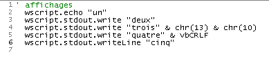 |
On notera les points suivants :
- Toute texte placé après une apostrophe est considéré comme un commentaire du script et n'est pas interprété par WSH ( ligne 1).
- la méthode echo écrit ses arguments et passe à la ligne suivante de même que la méthode writeLine (lignes 2 et 6)
- la méthode write écrit ses arguments et ne passe pas à la ligne suivante (ligne 3)
- une marque de fin de ligne est représentée par la suite de deux caractères de codes ASCII 13 et 10. Ainsi ligne 4 est-elle représentée par l'expression chr(13) & chr(10) où chr(i) est le caractère de code ASCII i et & l'opérateur de concaténation de chaîne. Ainsi "chat" & "eau" est la chaîne "chateau".
- la marque de fin de ligne peut être représentée plus facilement par la constante vbCRLF (ligne 5)
3.2. Ecriture des instructions dans un script Vbscript
Par défaut, on écrit une instruction par ligne. Néanmoins, on peut écrire plusieurs instructions par ligne en les séparant par le caractère : comme dans inst1:inst2:inst3. Si une ligne est trop longue, on peut la découper en morceaux. Il faut alors que les différentes parties de l'instruction soient terminées par les deux caractères (espace)_. Nous reprenons l'exemple précédent en réécrivant différemment les instructions :
Programme | Résultats |
| 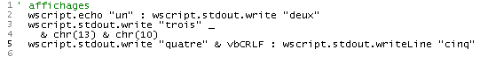 |
3.3. Écrire avec la fonction msgBox
Si dans ce document, nous utilisons quasi exclusivement l'objet wscript pour écrire à l'écran, il existe une fonction plus sophistiquée pour afficher des informations dans une fenêtre cette fois-ci. C'est la fonction msgbox qui s'utilise en général avec trois paramètres :
msgbox message, icônes+boutons, titre
- message est le texte du message à afficher
- icônes+boutons (facultatif) est en fait un nombre qui indique le type d'icône et les boutons à placer dans la fenêtre du message. Ce nombre est le plus souvent la somme de deux nombres : le premier détermine l'icône, le second les boutons
- titre est le texte à placer dans la barre de titre de la fenêtre de message
Les valeurs à utiliser pour préciser l'icône et les boutons de la fenêtre d'affichage sont les suivantes :
Constante | Valeur | Description |
vbOKOnly | 0 | Affiche uniquement le bouton OK. |
vbOKCancel | 1 | Affiche les boutons OK et Annuler. |
vbAbortRetryIgnore | 2 | Affiche les boutons Abandon, Réessayer et Ignorer. |
vbYesNoCancel | 3 | Affiche les boutons Oui, Non et Annuler. |
vbYesNo | 4 | Affiche les boutons Oui et Non. |
vbRetryCancel | 5 | Affiche les boutons Réessayer et Annuler. |
vbCritical | 16 | Affiche l'icône Message critique. |
vbQuestion | 32 | Affiche l'icône Demande d'avertissement. |
vbExclamation | 48 | Affiche l'icône Message d'avertissement. |
vbInformation | 64 | Affiche l'icône Message d'information. |
vbDefaultButton1 | 0 | Le premier bouton est le bouton par défaut. |
vbDefaultButton2 | 256 | Le deuxième bouton est le bouton par défaut. |
vbDefaultButton3 | 512 | Le troisième bouton est le bouton par défaut. |
vbDefaultButton4 | 768 | Le quatrième bouton est le bouton par défaut. |
vbApplicationModal | 0 | Application modale ; l'utilisateur doit répondre au message avant de continuer à travailler dans l'application courante. |
vbSystemModal | 4096 | Système modal ; toutes les applications sont suspendues jusqu'à ce que l'utilisateur réponde au message. |
Voici des exemples :
Programme | ||||||||||||
| 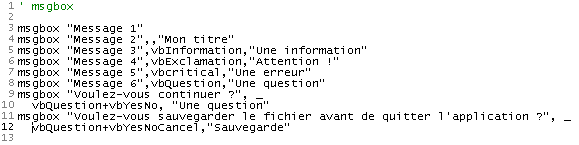 | ||||||||||||
Résultats | ||||||||||||
| ||||||||||||
Dans certains cas, on présente une fenêtre d'information qui est également une fenêtre de saisie. Si on pose une question, on veut par exemple savoir si l'utilisateur a cliqué sur le bouton oui ou sur le bouton non. La fonction msgBox rend un résultat que dans le programme précédent nous n'avons pas utilisé. Ce résultat est un nombre entier représentant le bouton utilisé par l'utilisateur pour fermer la fenêtre d'affichage :
Constante | Valeur | Bouton choisi |
vbOK | 1 | OK |
vbCancel | 2 | Annuler |
vbAbort | 3 | Abandon |
vbRetry | 4 | Réessayer |
vbIgnore | 5 | Ignorer |
vbYes | 6 | Oui |
vbNo | 7 | Non |
Le programme suivant montre l'utilisation du résultat de la fonction msgBox. On présente 4 fois une fenêtre avec les boutons oui, non, annuler. On répond de la façon suivante :
- on clique sur oui
- on clique sur non
- on clique sur annuler
- on ferme la fenêtre sans utiliser de bouton. Le programme montre que cela revient à utiliser le bouton Annuler.
Programme | ||||
| 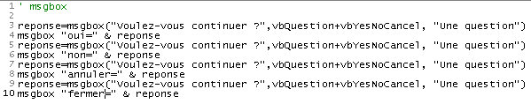 | ||||
Résultats | ||||
|

3.4. Les données utilisables en Vbscript
VBscript ne connaît qu'un type de données : le variant. La valeur d'un variant peut être un nombre (4, 10.2), une chaîne de caractères ("bonjour"), un booléen (true/false), une date (#01/01/2002#), l'adresse d'un objet, un ensemble de toutes ces données placées dans une structure appelée tableau.
Examinons le programme suivant et ses résultats :
Programme | Résultats |
| 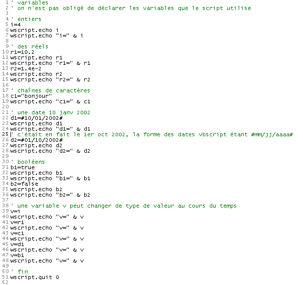 |
Commentaires :
- un certain nombre de langages de programmation (C, C++, Pascal, Java, C#, ...) exigent la déclaration préalable d'une variable avant son utilisation. Cette déclaration consiste à indiquer le nom de la variable et le type de données elle peut contenir (entier, réel, chaîne, date, booléen, ...). La déclaration des variables permet différentes choses :
- connaître la place mémoire nécessaire à la variable si différents types de données nécessitent différents espaces mémoire
- de vérifier la cohérence du programme. Ainsi si i est un entier et c une chaîne de caractères, multiplier i par c n'a aucun sens. Si le type des variables i et c a été déclaré par le programmeur, le programme chargé d'analyser le programme avant son exécution peut signaler une telle incohérence.
Comme la plupart des langages de script à type de données unique (Perl, Python, Javascript, ...) Vbscript autorise de ne pas déclarer les variables. C'est ce qui a été fait dans l'exemple ci-dessus.
-
notons la syntaxe de différentes données
- 10.2 en ligne 10 (point décimal et non virgule). On notera qu'à l'affichage c'est 10,2 qui est affiché.
- 1.4e-2 en ligne 13 (notation scientifique). A l'affichage, c'est le nombre 0,014 qui a été affiché
- [#01/10/2002#] (ligne 26) pour représenter la date du 10 janvier 2002. C'est donc le format #mm/jj/aaaa# que vbscript utilise pour représenter la date jj du mois mm de l'année aaaa
- les booléens true et false (vrai/faux) en lignes 31 et 34. Ces deux valeurs sont représentées respectivement par les entiers -1 et 0 comme le montre l'affichage des lignes 32 et 35. Lorsqu'un booléen est concaténé à une chaîne de caractères, ces valeurs deviennent respectivement les chaînes "Vrai" et "Faux" comme le montrent les lignes 33 et 36. On remarquera au passage que l'opérateur & de concaténation peut servir à concaténer autre chose que des chaînes.
-
une variable v n'ayant pas de type assigné, elle peut accueillir successivement dans le temps des valeurs de différents types.
3.5. Les sous-types du type variant
Voici que dit la documentation officielle sur les différents types de données que peut contenir un variant :
Au-delà de la simple distinction nombre/chaîne, un Variant peut distinguer différents types d'information numérique. Par exemple, certaines informations numériques représentent une date ou une heure. Lorsque ces informations sont utilisées avec d'autres données de date ou d'heure, le résultat est toujours exprimé sous la forme d'une date ou d'une heure. Vous disposez aussi d'autres types d'information numérique, des valeurs booléennes jusqu'aux grands nombres à virgule flottante. Ces différentes catégories d'information qui peuvent être contenues dans un Variant sont des sous-types. Dans la plupart des cas, vous placez simplement vos données dans un Variant et celui-ci se comporte de la façon la plus appropriée en fonction de ces données.
Le tableau suivant présente différents sous-types susceptibles d'être contenus dans un Variant.
Sous-type | Description |
Empty | Le Variant n'est pas initialisé. Sa valeur est égale à zéro pour les variables numériques et à une chaîne de longueur nulle ("") pour les variables chaîne. |
Null | Le Variant contient intentionnellement des données incorrectes. |
Boolean | |
Byte | Contient un entier de 0 à 255. |
Integer | Contient un entier de -32 768 à 32 767. |
Currency | -922 337 203 685 477,5808 à 922 337 203 685 477,5807. |
Long | Contient un entier de -2 147 483 648 à 2 147 483 647. |
Single | Contient un nombre à virgule flottante en précision simple de -3,402823E38 à -1,401298E-45 pour les valeurs négatives ; de 1,401298E-45 à 3,402823E38 pour les valeurs positives. |
Double | Contient un nombre à virgule flottante en précision double de -1,79769313486232E308 à -4,94065645841247E-324 pour les valeurs négatives ; de 4,94065645841247E-324 à 1,79769313486232E308 pour les valeurs positives. |
Date (Time) | Contient un nombre qui représente une date entre le 1er janvier 100 et le 31 décembre 9999. |
String | Contient une chaîne de longueur variable limitée à environ 2 milliards de caractères. |
Object | Contient un objet. |
Error | Contient un numéro d'erreur. |
3.6. Connaître le type exact de la donnée contenue dans un variant
Une variable de type variant peut contenir des données de divers types. Il nous faut quelquefois connaître la nature exacte de ces données. Si dans un programme nous écrivons produit=nombre1*nombre2, nous supposons que nombre1 et nombre2 sont deux données numériques. Parfois nous n'en sommes pas sûrs car ces valeurs peuvent provenir d'une saisie au clavier, d'un fichier, d'une source extérieure quelconque. Il nous faut alors vérifier la nature des données placées dans nombre1 et nombre2. La fonction typename(var) nous permet de connaître le type de données contenue dans la variable var. Voici des exemples :
Programme | Résultats |
| 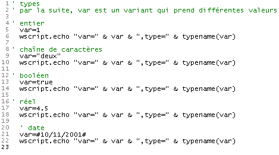 |
Une autre fonction possible est vartype(var) qui rend un nombre représentant le type de la donnée contenue par la variable var :
Constante | Valeur | Description |
vbEmpty | 0 | Empty (non initialisée) |
vbNull | 1 | Null (aucune donnée valide) |
vbInteger | 2 | Entier |
vbLong | 3 | Entier long |
vbSingle | 4 | Nombre en virgule flottante en simple précision |
vbDouble | 5 | Nombre en virgule flottante en double précision |
vbCurrency | 6 | Monétaire |
vbDate | 7 | Date |
vbString | 8 | Chaîne |
vbObject | 9 | Objet Automation |
vbError | 10 | Erreur |
vbBoolean | 11 | Booléen |
vbVariant | 12 | Variant (utilisé seulement avec des tableaux de Variants) |
vbDataObject | 13 | Objet non Automation |
vbByte | 17 | Octet |
vbArray | 8192 | Tableau |
Remarque Ces constantes sont spécifiées par VBScript. En conséquence, les noms peuvent être utilisés n'importe où dans votre code à la place des valeurs réelles.
Les informations ci-dessus proviennent de la documentation de VBscript. Celle-ci est parfois incorrecte, issue probablement de copier-coller faits à partir de la documentation de VB. La fonction vartype de VBScript ne fait qu'une partie de ce qui est annoncé ci-dessus.
Le programme précédent, réécrit pour vartype donne les résultats suivants :
Programme | Résultats |
| 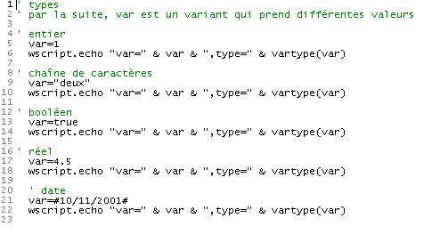 |
3.7. Déclarer les variables utilisées par le script
Nous avons indiqué qu'il n'était pas obligatoire de déclarer les variables utilisées par le script. Dans ce cas, si nous écrivons :
avec une faute de frappe smme au lieu de somme dans l'instruction 2, vbscript ne signalera aucune erreur. Il supposera que smme est une nouvelle variable. Il la créera et dans le contexte de l'instruction 2 l'utilisera en l'initialisant à 0.
Ce genre d'erreurs peut être très difficile à retrouver. Aussi est-il conseillé de forcer la déclaration des variables avec la directive option explicit placée en début de script. Ensuite toute variable doit être déclarée avec une instruction dim avant sa première utilisation :
Dans cet exemple, vbscript indiquera qu'il y a une variable non déclarée smme en 2) comme le montre l'exemple qui suit :
Programme | Résultats | ||
 |
Si dans les courts exemples du document, les variables ne sont la plupart du temps pas déclarées, nous forcerons leur déclaration dès que nous écrirons les premiers scripts significatifs. La directive Option explicit sera alors utilisée systématiquement.
3.8. Les fonctions de conversion
Vbscript transforme les données des variants en chaînes, nombres, booléens, ... selon le contexte. La plupart du temps, cela fonctionne bien mais parfois cela donne quelques surprises comme nous le verrons ultérieurement. On peut alors vouloir "forcer" le type de donnée du variant. VBscript possède des fonctions de conversion qui transforment une expression en divers types de données. En voici quelques unes :
Cint (expression) | transforme expression en entier court (integer) |
Clng (expression) | transforme expression en entier long (long) |
Cdbl (expression) | transforme expression en réel double (double) |
Csng (expression) | transforme expression en réel simple (single) |
Ccur (expression) | transforme expression en donnée monétaire (currency) |
Voici quelques exemples :
3.9. Lire des données tapées au clavier
L'objet wscript permet à un script de récupérer des données tapées au clavier. La méthode wscript.stdin.readLine permet de lire une ligne de texte tapée au clavier et validée par la touche "Entrée". Cette ligne lue peut être affectée à une variable.
Programme | Résultats |
| 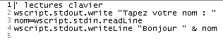 |
Commentaires :
- Dans la colonne des résultats et dans la ligne [Tapez votre nom : st] , st est la ligne tapée par l'utilisateur.
Si le texte tapé au clavier représente un nombre, il est quand même considéré avant tout comme une chaîne de caractères comme le montre l'exemple ci-dessous :
Programme | Résultats |
| 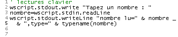 |
Si ce nombre intervient dans une opération arithmétique, VBscript fera automatiquement la conversion de la chaîne vers un nombre mais pas toujours. Regardons l'exemple qui suit :
Programme | Résultats |
| 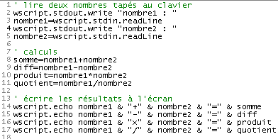 |
Dans les résultats, on voit que la ligne 8 du script ne s'est pas déroulée comme attendu, ceci parce que (malheureusement) en vbscript l'opérateur + a deux significations : addition de deux nombres ou concaténation de deux chaînes (les deux chaînes sont collées l'une à l'autre). Nous avons vu précédemment que les nombres tapés au clavier étaient lus comme étant des chaînes de caractères et que vbscript transformait celles-ci en nombres selon les besoins. Il l'a correctement fait pour les opérations -,*,/ qui ne peuvent faire intervenir que des nombres mais pas pour l'opérateur + qui lui peut également faire intervenir des chaînes. Il a supposé ici qu'on voulait faire une concaténation de chaînes.
Une solution simple à ce problème est de transformer en nombres les chaînes dès leur lecture comme le montre l'amélioration qui suit du programme précédent :
Programme | Résultats |
| 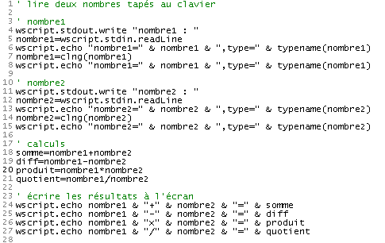 |
3.10. Saisir des données avec la fonction inputbox
On peut vouloir saisir des données dans une interface graphique plutôt qu'au clavier. On utilise alors la fonction inputBox. Celle-ci admet de nombreux paramètres dont seuls les deux premiers sont fréquemment utilisés :
reponse=inputBox(message,titre)
- message : la question que vous posez à l'utilisateur
- titre (facultatif) : le titre que vous donnez à la fenêtre de saisie
- reponse : le texte tapé par l'utilisateur. Si celui-ci a fermé la fenêtre sans répondre, reponse est la chaîne vide.
Voici un exemple où on demande le nom et l'âge d'une personne. Pour le nom on donne une information et on fait OK. Pour l'âge, on donne également une information mais on fait Annuler.
Programme | ||||
| 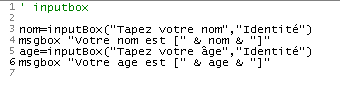 | ||||
Résultats | ||||
|

3.11. Utiliser des objets structurés
Il est possible de créer avec vbscript des objets ayant des méthodes et des propriétés. Pour ne pas compliquer les choses, nous allons présenter ici un objet avec des propriétés et pas de méthodes. Considérons une personne. Elle a de nombreuses propriétés qui la caractérisent : taille, poids, couleur de peau, des yeux, des cheveux, ... Nous n'en retiendrons que deux : son nom et son âge. Avant de pouvoir utiliser des objets, il faut créer le moule qui va permettre de les fabriquer. Cela se fait en vbscript avec une classe. La classe personne pourrait être définie comme suit :
C'est l'instruction [Dim nom,age] qui définit les deux propriétés de la classe personne. Pour créer des exemplaires (on parle d'instances) de la classe personne, on écrit :
Pourquoi ne pas écrire
Parce qu'un variant ne peut contenir un objet. Il peut seulement en contenir l'adresse. En écrivant set personne1=new personne, la séquence d'événements suivante prend place :
- un objet personne est créé. Cela veut dire que de la mémoire lui est allouée.
- l'adresse de cet objet personne est affectée à la variable personne1
Nous avons alors le schéma mémoire suivant pour les variables personne1 et personne2 :
| 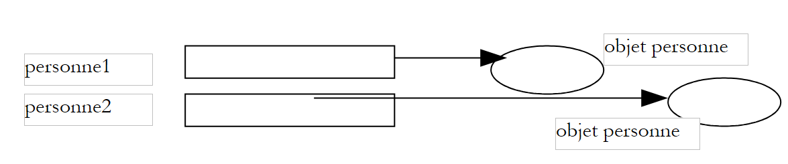 |
Par abus de langage, on pourra dire que personne1 est un objet personne. On peut accepter cet abus de langage si on se rappelle que personne1 est en fait l'adresse d'un objet personne et non l'objet personne lui-même.
Nous avons dit qu'un objet personne avait deux propriétés nom et age. Comment exploiter ces propriétés ? Par la notation objet.propriété comme il a été expliqué un peu plus haut. Ainsi
personne1.nom désigne le nom de la personne 1 et personne1.age son âge. Voici un court programme d'illustration :
Programme | Résultats | ||
| 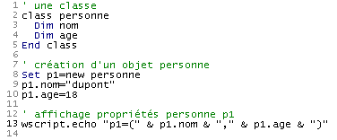 |
Le programme précédent pourrait être modifié comme suit :
Programme | Résultats |
| 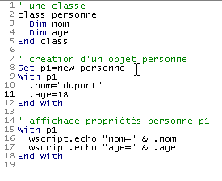 |
Nous avons utilisé ici la structure with ... end with qui permet de "factoriser" des noms d'objets dans des expressions. La structure with p1 ... end with des lignes 9-12 et 15-18 permet d'utiliser ensuite la syntaxe .nom en lieu et place de p1.nom et .age en lieu et place de p1.age. Cela permet d'alléger l'écriture des instructions où le même nom d'objet est utilisée de façon répétée.
3.12. Affecter une valeur à une variable
Il y a deux instructions pour affecter une valeur à une variable :
- variable=expression
- set variable=expression
La forme 2 est réservée aux expressions dont le résultat est une référence d'objet. Pour tous les autres types d'expressions c'est la forme 1 qui convient. La différence entre les deux formes est la suivante :
- dans l'instruction variable=expression, variable reçoit une valeur. Si v1 et v2 sont deux variables, écrire v1=v2 affecte la valeur de v1 à v2. On a donc la duplication d'une valeur à deux endroits différents. Si par la suite, la valeur de v2 est modifiée, celle de v1 ne l'est en rien.
| 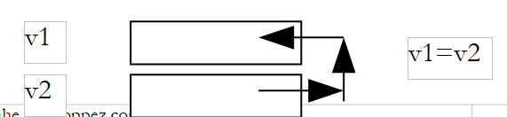 |
- dans l'instruction set variable=expression, variable reçoit comme valeur l'adresse d'un objet. Si v1 et v2 sont deux variables et si v2 est l'adresse d'un objet obj2, écrire set v1=v2 affecte la valeur de v1 à v2, donc l'adresse de l'objet obj2. Lorsque le script manipule ensuite v1 et v2, ce ne sont pas les "valeurs" de v1 et v2 qui sont manipulées mais bien les objets "pointés" par v1 et v2, donc le même objet ici. On dit que v1 et v2 sont deux références au même objet et manipuler ce dernier via v1 ou v2 ne fait aucune différence. Dit autrement, modifier l'objet référencé par v2 modifie celui référencé par v1.
| 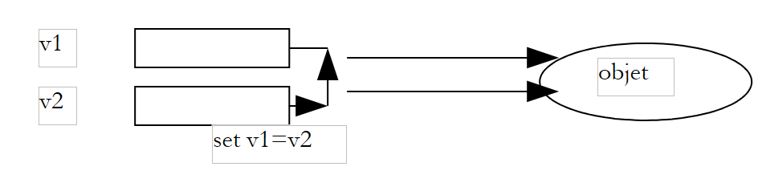 |
Voici un exemple :
Programme | Résultats |
| 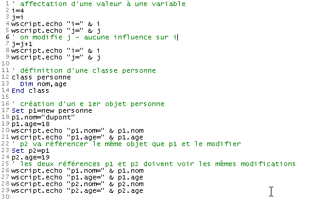 |
3.13. Évaluer des expressions
Les principaux opérateurs permettant d'évaluer des expressions sont les suivantes :
Type d'opérateurs | Opérateurs | Exemple |
Arithmétique | +,-,*,/ | |
mod | a mod b donne le reste de la division entière de a par b. Auparavant a et b ont été transformés en entiers si besoin était. | |
\ | a \ b donne le quotient de la division entière de a par b. Auparavant a et b ont été transformés en entiers si besoin était. | |
^ | a^b élève a à la puissance b. Ainsi a^2 est égal à a2 | |
Comparaison | <,<= >, >= =,<> | a<>b est vrai si a est différent de b a=b est vrai si a est égal à b a et b peuvent être tous deux des nombres ou tous deux des chaînes de caractères. Dans ce dernier cas, chaine1<chaine2 si dans l'ordre alphabétique chaine1 précède chaine2. Dans la comparaison de chaînes, les majuscules précèdent les minuscules dans l'ordre alphabétique. |
is | obj1 is obj2 est vrai si obj1 et obj2 sont des références sur le même objet. | |
Logique | and, or, not, xor | Les opérandes sont tous ici booléens. bool1 or bool2 est vrai si bool1 ou bool2 est vrai bool1 and bool2 est vrai si bool1 et bool2 sont vrais not bool1 est vrai si bool1 est faux et vice-versa bool1 xor bool2 est vrai si seulement un seul des booléens bool1, bool2 est vrai |
Concaténation | &, + | Il est déconseillé d'utiliser l'opérateur + pour concaténer deux chaînes à cause de la confusion possible avec l'addition de deux nombres. On utilisera donc exclusivement l'opérateur &. |
3.14. Contrôler l'exécution du programme
3.14.1. Exécuter des actions de façon conditionnelle
L'instruction vbscript permettant de faire des actions selon la valeur vraie/fausse d'une condition est la suivante :
L'expression expression est tout d'abord évaluée. Cette expression doit avoir une valeur booléenne. Si elle a la valeur vrai, les actions du then sont exécutées sinon ce sont celles du else s'il est présent. |
Suit un programme présentant différentes variantes du if-then-else :
Programme | Résultats |
| 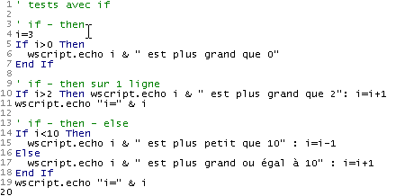 |
Commentaires :
- en vbscript, on peut écrire instruction1:instruction2:... : instructionn au lieu d'écrire une instruction par ligne. C'est cette possibilité qui a été exploitée en ligne 10 par exemple.
3.14.2. Exécuter des actions de façon répétée
Boucle à nombre d'itérations connu | • la variable i est ici appelée variable de boucle. Elle peut porter un nom quelconque • i prend la valeur idébut • la valeur de i est comparée à ifin. Si i<=ifin, les actions situées entre le for... next sont exécutées • i est incrémenté de la quantité ipas (i=i+ipas) • on reboucle à l'étape 3 précédente. Au bout d'un nombre fini d'étapes, la valeur de i dépassera ifin. L'exécution du script se poursuit avec l'instruction qui suit le next • si l'incrément ipas est négatif, la condition de l'étape 3 est changée. On exécute les actions du for...next que si i>=ifin. On peut sortir d'une boucle for à tout moment avec l'instruction exit for. |
Boucle à nombre d'itérations inconnu | • l'expression condition est évaluée. Si elle est vraie, les actions du while...loop sont exécutées • les actions exécutées ont pu modifier la valeur de condition. On reboucle sur l'étape 1 précédente. • lorsque l'expression condition devient fausse, la boucle est terminée On peut sortir d'une boucle do while à tout moment avec l'instruction exit do. |
Le programme ci-dessous illustre ces points :
Programme | ||
| 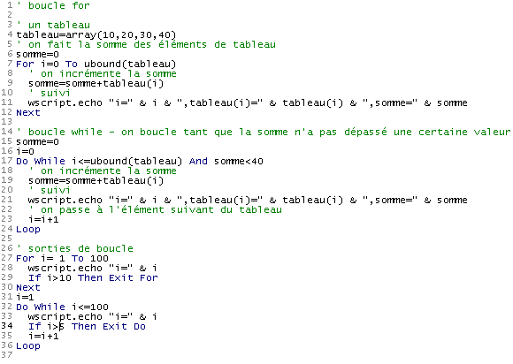 | ||
Résultats | ||
Note : Dans la phase de développement d'un programme, il n'est pas rare qu'un programme "boucle", c.a.d. qu'il ne s'arrête jamais. En général, le programme exécute une boucle dont la condition de sortie ne peut être vérifiée comme par exemple dans l'exemple qui suit :
Si on exécute le programme précédent, la première boucle ne s'arrêtera jamais d'elle-même. On peut forcer son arrêt en tapant CTRL-C au clavier (touche CTRL et touche C enfoncées en même temps).
3.14.3. Terminer l'exécution du programme
L'instruction wscript.quit n termine l'exécution du programme en renvoyant un code d'erreur égal à n. Sous DOS, ce code d'erreur peut être testé avec l'instruction if ERRORLEVEL n qui est vrai si le code d'erreur renvoyé par le dernier programme exécuté est >=n. Considérons le programme suivant et ses résultats :
| 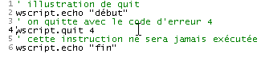 |
Juste après l'exécution du programme, on émet les trois commandes DOS suivantes :
La commande DOS 1 teste si le code d'erreur retourné par le programme est >=5. Si oui, elle affiche (echo) 5 sinon rien.
La commande DOS 2 teste si le code d'erreur retourné par le programme est >=4. Si oui, elle affiche 4 sinon rien.
La commande DOS 3 teste si le code d'erreur retourné par le programme est >=3. Si oui, elle affiche 3 sinon rien.
Des résultats affichés, on peut déduire que le code d'erreur retourné par le programme était 4.
3.15. Les tableaux de données dans un variant
Un variant T peut contenir une liste de valeurs. On dit alors que c'est un tableau. Un tableau T possède diverses propriétés :
- on a accès à l'élément i du tableau T par la syntaxe T(i) où i est un entier appelé indice entre 0 et n-1 si T a n éléments.
- on peut connaître l'indice du dernier élément du tableau T avec l'expression ubound(T). Le nombre d'éléments du tableau T est alors ubound(T)+1. On appelle souvent ce nombre la taille du tableau.
- un variant T peut être initialisé avec un tableau vide par la syntaxe T=array() ou avec une suite d'éléments par la syntaxe T=array(élément0, élément1, ...., élémentn)
- on peut ajouter des éléments à un tableau T déjà créé. Pour cela, on utilise l'instruction redim preserve T(N) où N est le nouvel indice du dernier élément du tableau T. L'opération est appelée un redimensionnement (redim). Le mot clé preserve indique que lors de ce redimensionnement, le contenu actuel du tableau doit être préservé. En l'absence de ce mot clé, T est redimensionné et vidé de ses éléments.
- un élément T(i) du tableau T est de type variant et peut donc contenir n'importe quelle valeur et en particulier un tableau. Dans ce cas, la notation T(i)(j) désigne l'élément j du tableau T(i).
Ces diverses propriétés des tableaux sont illustrées par le programme qui suit :
Programme | Résultats |
| 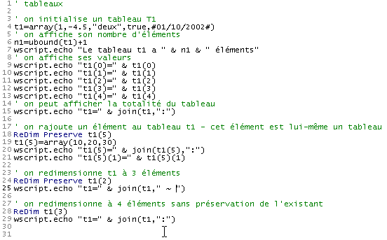 |
Commentaires
- on a utilisé ici une fonction appelée join explicitée un peu plus loin.
3.16. Les variables tableaux
Il existe en vbscript une autre façon d'utiliser un tableau, c'est d'utiliser une variable tableau. Une telle variable doit alors être obligatoirement déclarée contrairement aux variables scalaires par une instruction dim. Diverses déclarations sont possibles :
- dim tableau(n) déclare un tableau statique de n+1 éléments numérotés de 0 à n. Ce type de tableau ne peut pas être redimensionné
- dim tableau() déclare un tableau dynamique vide. Il devra être redimensionné pour être utilisé par l'instruction redim de la même manière que pour un variant contenant un tableau
- dim tableau(n,m) déclare un tableau à 2 dimensions de (n+1)*(m+1) éléments. L'élément (i,j) du tableau est noté tableau(i,j). On notera la différence avec un variant où le même élément aurait été noté tableau(i)(j).
Pourquoi deux types de tableaux qui finalement sont très proches ? La documentation de vbscript n'en parle pas et n'indique pas non plus si l'un est plus performant que l'autre. Par la suite, nous utiliserons quasi exclusivement le tableau dans un variant dans nos exemples. On se rappellera cependant que VBscript dérive du langage Visual Basic qui contient lui des données typées (integer, double, boolean, ...). Dans ce cas, si on doit utiliser un tableau de nombres réels par exemple, la variable tableau sera plus performante que la variable variant. On déclarera alors quelque chose comme dim tableau(1000) as double pour déclarer un tableau de nombres réels ou simplement dim tableau() as double si le tableau est dynamique.
Voici un exemple illustrant l'utilisation de variables tableau :
Programme | Résultats |
| 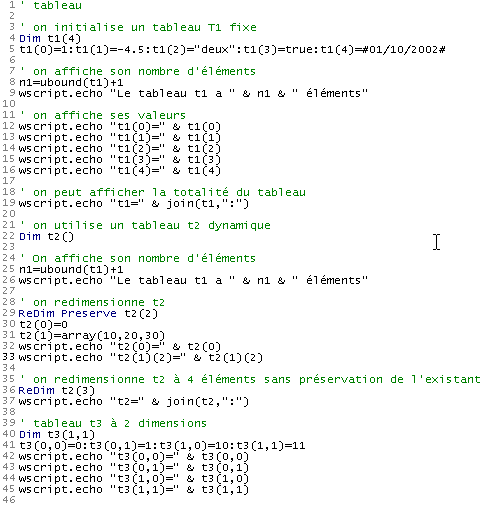 |
3.17. Les fonctions split et join
Les fonctions split et join permettent de passer d'une chaîne de caractères à un tableau et vice-versa :
- Si T est un tableau et car une chaîne de caractères, join(T,car) est une chaîne de caractères formée par la réunion de tous les éléments du tableau T, chacun étant séparé du suivant par la chaîne car. Ainsi join(array(1,2,3),"abcd") donnera la chaîne "1abcd2abcd3"
- Si C est une chaîne de caractères formée d'une suite de champs séparés par la chaîne car la fonction split(C,car) est un tableau dont les éléments sont les différents de la chaîne C. Ainsi split("1abcd2abcd3","abcd") donnera le tableau (1,2,3)
Voici un exemple :
Programme | Résultats |
3.18. Les dictionnaires
On a accès à l'élément d'un tableau T lorsqu'on connaît son numéro i. Il est alors accessible par la notation T(i). Il existe des tableaux dont on accèe aux éléments, non pas par un numéro mais par une chaîne de caractères. L'exemple typique de ce type de tableau est le dictionnaire. Lorsqu'on cherche la signification d'un mot dans le "Larousse" ou "Le petit Robert", on accède à celle-ci par le mot. On pourrait représenter ce dictionnaire par un tableau à 2 colonnes :
mot1 | description1 |
mot2 | description2 |
mot3 | description3 |
.... |
On pourrait alors écrire des choses comme :
dictionnaire("mot1")="description1"
dictionnaire("mot2")="description2"
...
On est alors proche du fonctionnement d'un tableau si ce n'est que les indices du tableau ne sont pas des nombres entiers mais des chaînes de caractères. On appelle ce type de tableau un dictionnaire (ou tableau associatif, hashtable) et les indices chaînes de caractères les clés du dictionnaire (keys). L'usage des dictionnaires est extrêmement fréquent dans le monde informatique. Nous avons tous une carte de sécurité sociale avec dessus un numéro. Ce numéro nous identifie de façon unique et donne accès aux informations qui nous concernent. Dans le modèle dictionnaire("clé")="informations", "clé" serait ici le n° de sécurité sociale et "informations" toutes les informations stockées à notre sujet sur les ordinateurs de la sécurité sociale.
Sous Windows, on dispose d'un objet Active X appelé "Scripting.Dictionary" qui permet de créer et gérer des dictionnaires. Un objet Active X est un composant logiciel qui expose une interface utilisable par des programmes qui peuvent être écrits en différents langages, tant qu'ils respectent la norme d'utilisation des objets Active X. L'objet Scripting.dictionary est donc utilisable par les langages de programmation de Windows : javascript, per, python, C, C++, vb, vba,... et pas seulement par vbscript.
1 | Un objet Scripting.Dictionary est créé par une instruction set dico=wscript.CreateObject("Scripting.Dictionary") ou simplement set dico=CreateObject("Scripting.Dictionary") CreateObject est une méthode de l'objet WScript permettant de créer des instances d'objets Active X. La version 2 montre que wscript peut être un objet implicite. Lorsqu'une méthode ne peut être "rapprochée" d'un objet, le conteneur WSH essaiera de le rapprocher de l'objet wscript. |
2 | Une fois le dictionnaire créé, on va pouvoir lui ajouter des éléments avec la méthode add : dico.add "clé",valeur va créer une nouvelle entrée dans le dictionnaire associée à la clé "clé". La valeur associée est un variant dont une donnée quelconque. |
3 | Pour récupérer la valeur associée à une clé donnée on utilise la méthode item du dictionnaire : var=dico.item("clé") ou set var=dico.item("clé) si la valeur associée à la clé est un objet. |
4 | L'ensemble des clés du dictionnaire peut être récupéré dans un tableau variant grâce à la méthode keys : clés=dico.keys clés est un tableau dont on peut parcourir les éléments. |
5 | L'ensemble des valeurs du dictionnaire peut être récupéré dans un tableau variant grâce à la méthode items : valeurs=dico.items items est un tableau dont on peut parcourir les éléments. |
6 | L'existence d'une clé peut être testée avec la méthode exists : dico.exists("clé") est vrai si la clé "clé" existe dans le dictionnaire |
7 | On peut enlever une entrée du dictionnaire (clé+valeur) avec la méthode remove : dico.remove("clé") enlève l'entrée du dictionnaire associée à la clé "clé". dico.removeall enlève toutes les clés, c.a.d. vide le dictionnaire. |
Le programme suivant utilise ces diverses possibilités :
Programme | ||
| ||
Résultats | ||
|
3.19. Trier un tableau ou un dictionnaire
Il est courant de vouloir trier un tableau ou un dictionnaire dans l'ordre croissant ou décroissant de ses valeurs ou de ses clés pour un dictionnaire. Alors que dans la pupart des langages, existent des fonctions de tri, il ne semble pas en exister en vbscript. C'est une lacune.
3.20. Les arguments d'un programme
Il est possible d'appeler un programme vbscript en lui passant des paramètres comme dans :
cscript prog1.vbs arg1 arg2 .... argn
Cela permet à l'utilisateur de passer des informations au programme. Comment celui-ci fait-il pour les récupérer ? Regardons le programme suivant :
Programme | Résultats |
| 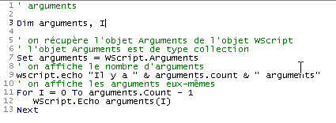 |
Commentaires
- WScript.Arguments est la collection des arguments passés au script
- une collection C est un objet qui a
- une propriété count qui est le nombre d'éléments dans la collection
- une méthode C(i) qui donne l'élément i de la collection
3.21. Une première application : IMPOTS
On se propose d'écrire un programme permettant de calculer l'impôt d'un contribuable. On se place dans le cas simplifié d'un contribuable n'ayant que son seul salaire à déclarer :
- on calcule le nombre de parts du salarié nbParts=nbEnfants/2 +1 s'il n'est pas marié, nbEnfants/2+2 s'il est marié, où nbEnfants est son nombre d'enfants.
- on calcule son revenu imposable R=0.72*S où S est son salaire annuel
- on calcule son coefficient familial Q=R/N
on calcule son impôt I d'après les données suivantes
12620.0 | 0 | 0 |
13190 | 0.05 | 631 |
15640 | 0.1 | 1290.5 |
24740 | 0.15 | 2072.5 |
31810 | 0.2 | 3309.5 |
39970 | 0.25 | 4900 |
48360 | 0.3 | 6898.5 |
55790 | 0.35 | 9316.5 |
92970 | 0.4 | 12106 |
127860 | 0.45 | 16754.5 |
151250 | 0.50 | 23147.5 |
172040 | 0.55 | 30710 |
195000 | 0.60 | 39312 |
0 | 0.65 | 49062 |
Chaque ligne a 3 champs. Pour calculer l'impôt I, on recherche la première ligne où QF<=champ1. Par exemple, si QF=30000 on trouvera la ligne
L'impôt I est alors égal à 0.15*R - 2072.5*nbParts. Si QF est tel que la relation QF<=champ1 n'est jamais vérifiée, alors ce sont les coefficcients de la dernière ligne qui sont utilisés. Ici :
ce qui donne l'impôt I=0.65*R - 49062*nbParts.
Le programme est le suivant :
Programme | ||
| ||
Résultats | ||
|
Commentaires :
- le programme utilise ce qui a été exposé précédemment (déclaration des variables, arguments, changements de types, tests, boucles, tableau dans un variant)
- il ne vérifie pas la validité des données, ce qui serait anormal dans un programme réel
- seule la boucle while présente une difficulté. Elle cherche à déterminer l'indice i du tableau limites pour lequel on a limites(i)>qf et cela pour i<ubound(limites) (c.a.d. ici i<13) car le dernier élément du tableau limites n'est pas significatif. Il a été ajouté uniquement pour que le test [Do While i<ubound(limites) And qf>limites(i)] puisse se faire pour i=13. Le test est alors 13<13 and qf>limites(13) et il faut alors (en vbscript) que limites(13) existe. Lorsqu'on sort de la boucle while, la dernière valeur de i calculée permet de calculer l'impôt : [impot=int(revenu*coeffr(i)-nbParts*coeffn(i))].